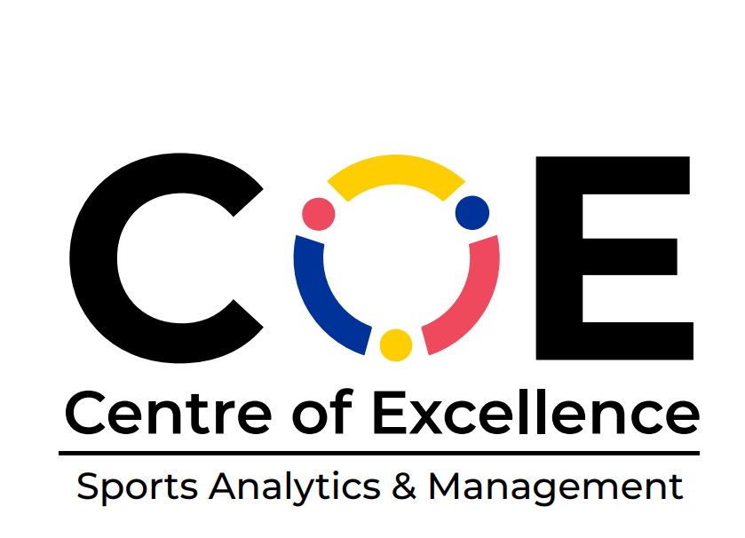

Sports Data Analytics Store
Advanced Sports Analytics & Performance Intelligence Solutions
üèÜ Centre of Excellence - Sports Analytics & Management
Developed by: MBA Business Analytics 2023-2025 Batch
Under Guidance of: Dr. Rajesh Kumar K V - Co-Chairperson CoE Sports Analytics and Management
Institution: Woxsen University, India
Project Categories by Sports
Project Overview
0
Total Projects
0
Sports Covered
0
ML Projects
25K+
Data Points